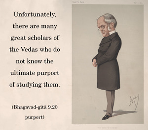

Those who study the Vedas and drink the soma juice, seeking the heavenly planets, worship Me indirectly. Purified of sinful reactions, they take birth on the pious, heavenly planet of Indra, where they enjoy godly delights.

The word trai-vidyāḥ refers to the three Vedas – Sāma, Yajur and Ṛg. A brāhmaṇa who has studied these three Vedas is called a tri-vedī. Anyone who is very much attached to knowledge derived from these three Vedas is respected in society. Unfortunately, there are many great scholars of the Vedas who do not know the ultimate purport of studying them. Therefore Kṛṣṇa herein declares Himself to be the ultimate goal for the tri-vedīs. Actual tri-vedīs take shelter under the lotus feet of Kṛṣṇa and engage in pure devotional service to satisfy the Lord. Devotional service begins with the chanting of the Hare Kṛṣṇa mantra and side by side trying to understand Kṛṣṇa in truth. Unfortunately those who are simply official students of the Vedas become more interested in offering sacrifices to the different demigods like Indra and Candra. By such endeavor, the worshipers of different demigods are certainly purified of the contamination of the lower qualities of nature and are thereby elevated to the higher planetary systems or heavenly planets known as Maharloka, Janaloka, Tapoloka, etc. Once situated on those higher planetary systems, one can satisfy his senses hundreds of thousands of times better than on this planet.